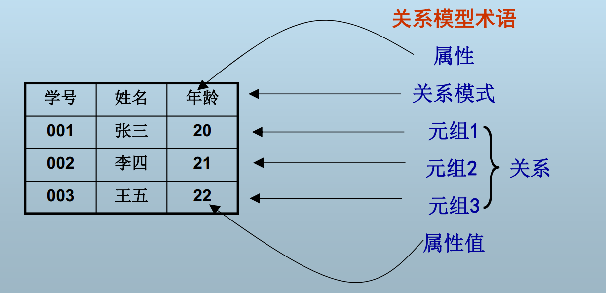
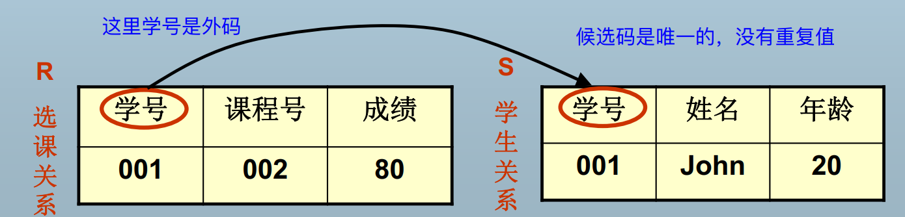
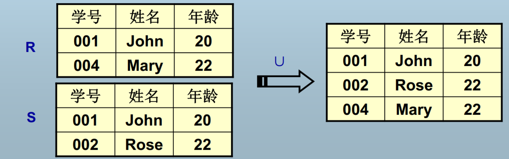
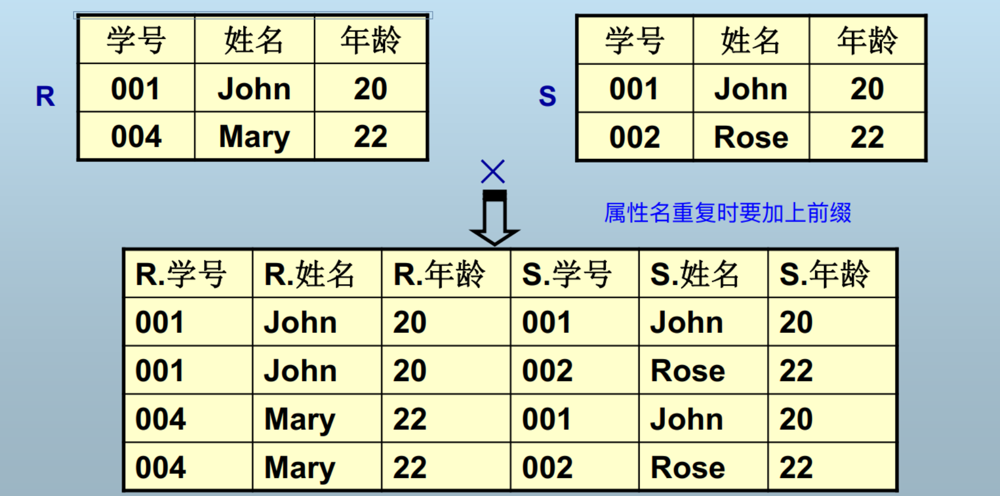
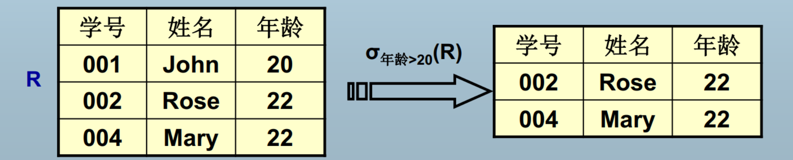
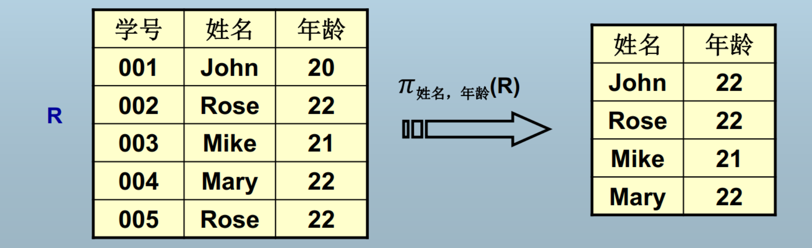
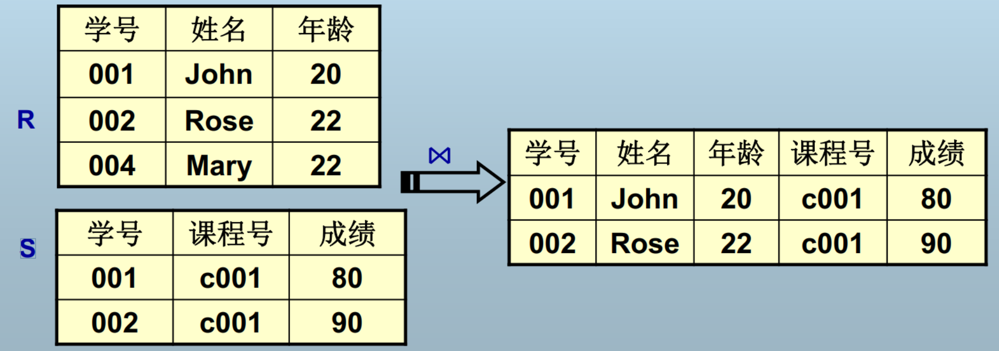
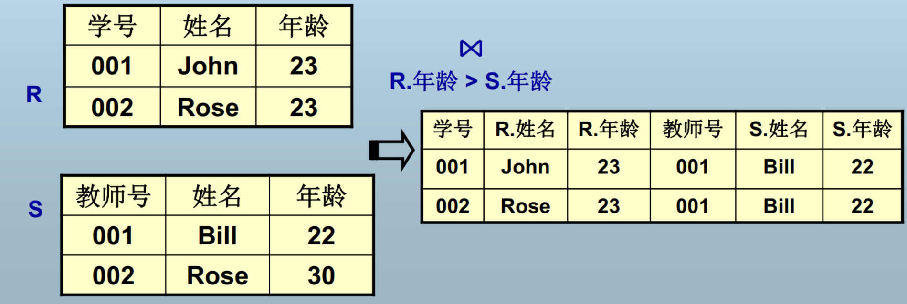
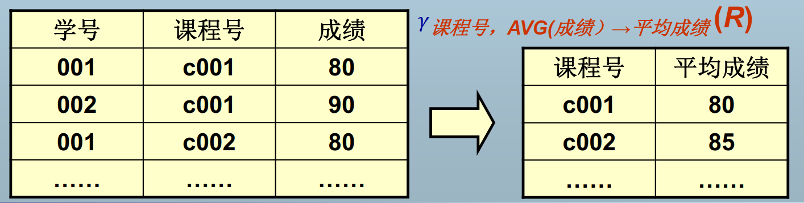

Chap3
数据模型¶
数据模型是对现实世界数据特征的抽象。
数据模型的定义
- 描述现实世界实体、实体间联系以及数据语义和一致性约束的模型
数据模型三要素¶
数据结构
- 现实世界实体及实体间联系的表示和实现
数据操作
- 数据检素和更新的实现
数据的完整性约束
- 数据及数据问联系应具有的制约和依赖规则（如：一个系可有多个学生，一个学生只属于一个系）
关系模型¶
用二维表格结构表示实体集，外码表示实体间联系，三类完整性规则表示数据约束的数据模型。

属性(Attribute)：二维表格的每一列称为关系的一个属性，列的数目称为度(degree)
元组(Tuple)：每一行称为关系的一个元组，元组的数目称为势或者基数(cardinality)
域(Domain)：一组具有相同数据类型的值的集合。每个属性有一个域
关系(Relation)：元组的集合
关系模式(Relation Schema)：
- 关系的逻辑结构和特征的描述
- 对应于二维表格的表头
- 通常由属性集和各属性域表示，不关心域时可省略域，如 Student (Name, Age, Class)
关系数据库模式(Relational Database Schema)：关系模式的集合
关系数据库：关系数据库模式的实例
关系模式的形式化定义¶
$R(U,D,dom,F)$
- $R$ 是关系模式名
- $U$ 是属性集合
- $D$ 是 $U$ 中属性的值来自的域
- $Dom$：${f|f:U\rightarrow D}$ 属性向域的映射集合
- $F$ 是属性间的依赖关系
举例：$Student(U,D,dom,F)$
- $U={\text{stuID, name, age}}$
- $D={\text{char},\text{int}}$
- $Dom={do m(\text{stuID})=dom(\text{name})=\text{char},dom(\text{age})=\text{int}}$
- $F={\text{stuID}\rightarrow \text{name},\text{stuID}\rightarrow \text{age}}$
关系模式通常简写为 $R(U),R(u_1,u_2,...),R$
超码、候选码、主码¶
超码 (Super Key)
- 在关系模式中能唯一标识一个元组的属性集称为关系模式的超码
候选码 (Candidate Key)
- 不含多余属性的超码（关系中的一个属性或属性组的值能够唯一地标识一个元组，且他的子集不能唯一标识）
- 包含在某个候选码中的属性称为主属性 (Primary Attribute)
- 不包含在任何一个候选码中的属性称为非主属性 (Non-prime Attribute)
主码 (Primary Key)
- 用户选作元组标识的一个候选码称为主码，其余的候选码称为替换码 (Alternate Attribute)
- 候选码可以唯一标识，主码可从候选码中产生
举例：Student(StuID, Name, Age, PassID)¶
超码：(StuID, Name), (PassID, Name), ...
候选码：StuID, PassID
主码：选 StuID 时，PassID 为替换码，反之则 StuID 为替换码
关系的性质¶
属性值不可分解：不允许表中有表
元组不可重复：一个关系模式至少存在一个候选码
没有行序，即元组之间无序：关系是元组的集合
没有列序，即属性之间无序：关系模式是属性的集合
关系模型的三类完整性规则¶
关系数据库的数据和操作必须遵循的规则：
实体完整性 (Entity Integrity)¶
- 关系模型 R 的主码（组成主码的所有属性）不可以取空值
参照完整性 (Referential Integrity)¶
外码（Foreign Key）：关系模式 R 的外码是它的一个属性集 FK，满足：
- 有一个关系模式 S，其某个候选码是 CK
- R 的 FK 上任一非空值，在 S 的 CK 上都有一个相同的值
S：被参照关系，Referenced Relation；R：参照关系，Referential Relation

参照关系 R 的外码可以为空，否则必须等于被参照关系 S 所参照的候选码的某个值
用户自定义完整性 (User-Defined Integrity)¶
针对某一具体数据的约束条件，反映某一具体应用所涉及的数据必须满足的特殊语义，由应用环境决定
如：成绩必须 $0\le\text{grade}\le100$
数据操作：关系运算¶
关系代数¶
代数 $=
关系代数 $=
- $A$：关系，关系代数中只存在这一种类型
- $O$：关系代数运算，任何关系代数运算的结果仍是关系
关系演算¶
是元组关系演算、也是域关系演算，因为 $\text{tuple }t=
原始的关系代数：传统集合操作¶
（1）并（Union）：返回两个关系中所有元组
- $R\cup S={t|t\in R\vee t\in S}$
- $t:$ 元组变量；$R,S:$ 关系代数表达式
- $R,S$ 的 degree 和类型必须相同

（2）交（Intersection）：返回两个关系共同的元组
（3）差（Difference）：返回属于第一个关系而不属于第二个关系的元组
（4）笛卡儿积（Cartesian Product）：返回两个关系的元组的任意组合所得到的元组集合
- $R\times S={t|t=

原始的关系代数：专门的关系操作¶
（1）选择（Select）：返回指定关系中满足给定条件的元组（按行选择）
- $\sigma_F(R)={t|t\in R\wedge F(t)=\text{true}}$
- $F$ 是一个逻辑表达式，表示所选的元组应满足的条件，由 $\neg,\wedge,\vee$ 连接算术表达式构成
- 算术表达式形为 $X\Theta Y,\Theta\in{>,<,=,\le,\ge,\ne},X,Y$ 可以是属性名、常量或简单函数

（2）投影（Project）：返回指定关系中去掉若干属性后所得的元组
- $\pi_A(R)={t[A]|t\in R}$，这里 $A$ 是 R 的属性子集
- A 中的属性不可重复

注：这里 002 和 005 选择后无法区分，合并。
（3）连接（Join）：从两个关系的笛卡儿积中选取属性间满足给定条件的元组
自然连接
- 设 $R$ 的属性集为 ${X,Y}$，$S$ 的属性集为 ${Y,Z}$
- $R\Join S={t|t=
- 相当于在 $R\times S$ 中选取 R 和 S 的所有公共属性值都相等的元组，并在结果中去掉重复属性

$\Theta$ 连接
- $R\Join_{A\Theta B}S={t|t=
- 当 $\Theta$ 是等号时叫做等值连接

（4）除（Divide）：除的结果与第二个关系的笛卡儿积包含在第一个关系中
- 设 $R$ 的属性集为 ${X,Y}$，$S$ 的属性集为 ${Y}$，则 $R\div S$ 的结果是一个关系 $P$，$P$ 的属性集为 ${X}$，并且 $P\times S$ 包含在 $R$ 中
- $degree(P)=degree(R)-degree(S)$
- $R\div S$ 的计算方法：$T=\pi_X(R)\quad\quad W=(T\times S)-R\quad\quad V=\pi_X(W)\quad\quad R\div S=T-V$
关系演算的语法¶
| 关系演算 | 数学符号表示 | 英语关键字表示 |
|---|---|---|
| 并 | $\cup$ | Union |
| 交 | $\cap$ | Intersect |
| 差 | $-$ | Minus |
| 笛卡儿积 | $\times$ | Times |
| 选择 | $\sigma$ | Where ... |
| 投影 | $\pi$ | { All But ...} |
| 连接 | $\Join$ | Join |
| 除 | $\div$ | Divide By |
补充操作：重命名¶
- 数据库中的关系都具有名字，但是关系代数表达式的结果没有可供引用的名字
- 引入重命名操作使得关系代数表达式的结果可以方便地在其他位置引用
- $\rho_X(E)$：将关系代数表达式 E 重命名为 X
- $\rho_{X(A_1,...,A_n)}(E)$：将关系代数表达式 E 重命名为 X，并且各属性更名为 $A_1,...,A_n$
关系代数表达式的定义¶
- 基本表达式：数据库中的一个关系，或者是常量关系
- $E_1,E_2$ 是基本表达式，则 $E_1\cup E_2,\sigma_P(E_1),\pi_S(E_2)$ 等都是关系代数表达式
附加的关系代数操作¶
扩展投影¶
仍用 $\pi_L(R)$ 表示投影操作，投影列表可以是如下元素之一：
- $R$ 的一个属性
- 形如 $x\rightarrow y$ 的表达式，这里 $x,y$ 都是属性名，表示取出 $x$ 之后重命名为 $y$
- 形如 $E\rightarrow z$ 的表达式，其中 $E$ 是一个涉及 R 的属性、常量和运算符的表达式，$z$ 是新名字
- 如：$a+b\rightarrow x\quad\quad c||d\rightarrow e$（串连接）
举例：
$Employee(E#, FirstName, LastName, salary)$
- $\pi_{E#,FirstName\mid\mid LastName\rightarrow Name}(Employee)$
- $\pi_{E#,salary*0.95\rightarrow Taxed_salary}(Employee)$
- $\pi_{E#\rightarrow EmployeeNum}(Employee)$
聚集函数（Aggregate）¶
如 SUM，COUNT，AVG，MAX，MIN 等
- $\pi_{COUNT(E#)\rightarrow employee_count}(Employee)$
分组（Group）¶
$\gamma_L(R)$，L 中只能包括两类对象：
- 分组属性：此操作依据分组属性的值将 R 分组
- 聚集函数：应用到关系的某个属性上的聚集操作，作为聚集函数参数的属性被称为聚集属性

排序¶
$\tau_L(R)$
赋值¶
$R\leftarrow E$